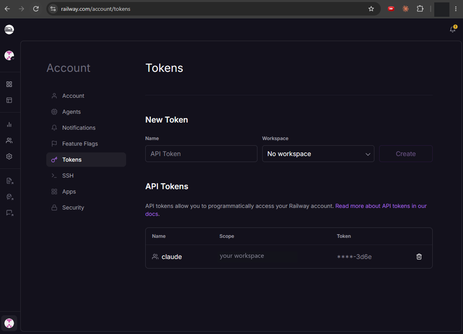
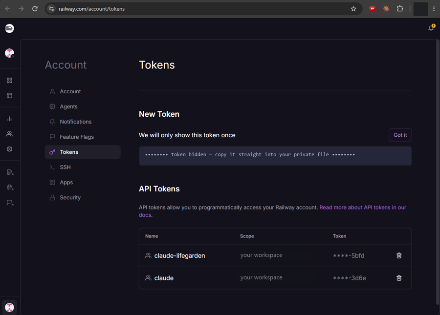

Langkah 5 daripada 5
Sambungkan domain sendiri atau sediakan login Google, kemudian semak hasilnya langkah demi langkah.
Pilih apa yang anda perlukan: A untuk alamat laman web anda sendiri, atau B untuk login Google. Tekan satu untuk buka, kemudian tekan setiap langkah.
Contoh: domain dibeli di GoDaddy, laman di Railway. Lebih kurang 10 minit, kemudian tunggu sehingga beberapa jam.
Claude perlukan kebenaran untuk ubah benda dalam akaun Railway anda (tambah domain, baca rekod). Pilih satu cara:
Cara 1 · Login melalui plugin Railway (paling mudah)
/plugin dan pasang railway (sekali sahaja)./mcp → pilih railway → Authenticate.Cara 2 · Token Railway dalam fail peribadi
claude-myproject, pilih workspace anda, klik Create.

.env). Tampal token ke dalam fail itu, bukan dalam chat, simpan dengan Ctrl+S, kemudian taip perkataan sudah sahaja dalam chat.Saya mahu anda uruskan akaun Railway saya untuk projek ini. Buat fail tetapan peribadi untuk token Railway (jangan masukkan ke GitHub), buka untuk saya, dan saya akan tampal token itu sendiri. Kemudian semak yang anda boleh nampak projek Railway saya.
Siap bila Claude senaraikan projek Railway anda. Kemudian pergi ke langkah 1.
Simpan token secara peribadi. Jangan sekali-kali tampal atau screenshot token dalam chat: sesiapa yang nampak boleh kawal projek anda. Kalau itu berlaku, atau bila projek sudah selesai, padam token di halaman Railway yang sama dengan ikon tong sampah.
Saya beli domainanda.com di GoDaddy dan mahu ia tunjuk laman saya di Railway. 1. Di Railway, tambah www.domainanda.com ke laman saya (guna semula kalau sudah ada) dan dapatkan rekod DNS yang diperlukan. 2. Buka GoDaddy dalam browser anda, di halaman DNS untuk domainanda.com. Kalau ia minta saya login, berhenti dan biar saya login sendiri. Jangan sekali-kali taip kata laluan atau kod saya. 3. Buat perubahan ini sahaja: - tetapkan rekod CNAME www kepada nilai Railway, - tambah rekod pengesahan TXT Railway, disalin dengan tepat, - forward domainanda.com ke https://www.domainanda.com (Permanent 301, forward sahaja, tanpa masking). GoDaddy mungkin ganti rekod "Parked" sendiri bila ia simpan forwarding. Itu memang dijangka. 4. Jangan ubah benda lain, jangan ubah nameserver, jangan beli apa-apa, jangan terima sebarang tawaran tambahan. Kalau skrin nampak lain, berhenti dan tanya saya. 5. Tunjuk saya dengan tepat apa yang anda ubah. 6. Terus semak dari luar (DNS awam, bukan komputer ini sahaja, kerana ia boleh ingat alamat lama selama sejam) sehingga Railway tunjuk domain sudah disahkan dan https://www.domainanda.com buka laman saya. Beritahu saya bila ia berjaya, dan sama ada domainanda.com tanpa www sudah forward (bahagian itu boleh ambil masa beberapa jam). 7. Kemudian senaraikan apa-apa dalam projek saya yang masih guna alamat lama (halaman balik selepas bayaran, pautan emel, tetapan login) dan tanya saya dulu sebelum ubah sebarang tetapan yang live.
Taip domain anda dalam kotak, kemudian Salin. Beli di tempat lain selain GoDaddy, atau hosting di tempat lain selain Railway? Tukar perkataan itu selepas tampal.
Tiada aplikasi desktop? Minta Claude Code tulis langkah 2–4 sebagai prompt untuk Claude in Chrome, login ke GoDaddy dalam Chrome, dan tampal ke dalam panel sisi Claude.
Akaun Google: buat bahagian B sendiri. Biar AI browser masuk ke akaun Google anda lebih berisiko daripada halaman DNS.
Popup login tunjuk nama aplikasi Google anda, jadi beri setiap jenama aplikasinya sendiri. Lebih kurang 10 minit di console.cloud.google.com.
New project (ilustrasi)
Skrin persetujuan (ilustrasi)
Audience (ilustrasi)
Authorised JavaScript origins (ilustrasi)
Client baru anda (ilustrasi)
Saya sudah cipta aplikasi login Google untuk [jenama]. Client ID: [tampal di sini]. Buat laman guna Client ID ini, semak yang login hanya diterima untuk aplikasi ini, dan beritahu saya tetapan production mana yang perlu diubah sebelum anda ubah.
Ralat itu (ilustrasi)
Alamat laman tiada dalam langkah B4. Tambah dengan tepat, simpan, tunggu 5 minit, cuba lagi.
Login Google tunjuk "Error 400: origin_mismatch" di [alamat halaman]. Beritahu saya dengan tepat alamat mana yang perlu ditambah di bawah Authorised JavaScript origins.
Buat langkah B3: terbitkan aplikasi supaya ia tertulis In production.
Forwarding boleh ambil masa beberapa jam untuk mula. Kalau masih tunjuk parking selepas itu, minta Claude semak forwarding dan pastikan Name untuk CNAME ialah www, bukan @.
Biasanya salah taip dalam rekod TXT. Minta Claude semak dari luar (prompt di bawah).
Domain saya masih belum disahkan. Semak rekod DNS saya dari luar dan beritahu saya dengan tepat rekod mana yang salah dan apa yang sepatutnya.